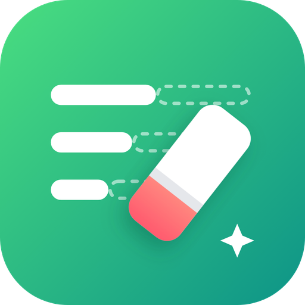
Стирает подписи и выноски с рисунков — в прозрачность, а не белым. Для репетиторов и учителей, которые собирают тетради, контрольные и презентации.
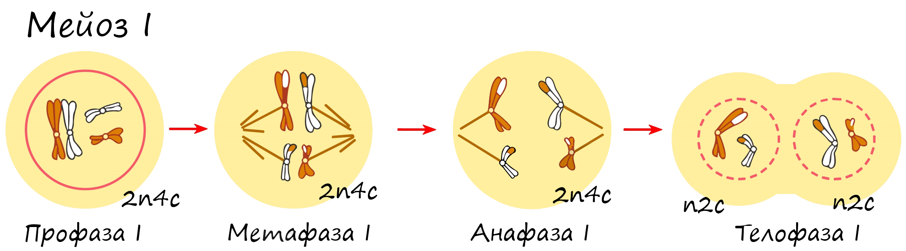
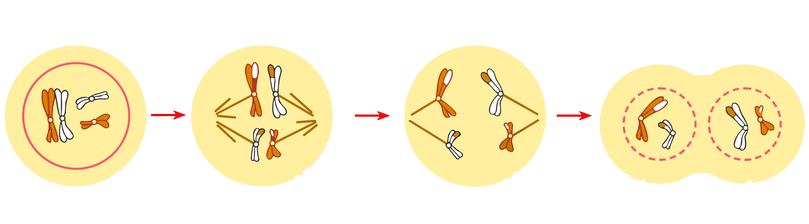
Подвигайте ползунок. Шахматка — это прозрачность: рисунок ляжет на любую страницу.
Картинка из учебника есть, а немой — нет. Раньше это полчаса в Photoshop на одну схему.
Биология, химия, география — схемы «подпиши органы» для домашки и пробников.
Рабочие листы и самостоятельные из иллюстраций к параграфу.
Десятки схем в неделю для тетрадей и вебинаров — без дизайнера.
Чистый рисунок, поверх которого подписи появляются по клику.
Всё внутри Figma: выделили картинку — получили немую схему на том же месте.
Erasely сам подхватит её из выделения.
Нейросеть находит текст, правила — линии от него. Можно отдельно: только подписи или только выноски.
Ластик, «Выноска», «Рамка» и кисть «Восстановить». Потом «Вставить в Figma» — схема на месте, а с «Подписи — слоями» рядом ляжет версия с вашим текстом.
Встроенная нейросеть находит подписи любого шрифта, цвета и размера — даже заходящие на рисунок.
Прозрачный фон остаётся прозрачным, белый — ровно белым: ни дыр в форме букв, ни серых «призраков».
Где выноска шла по телу или кости, место заливается окружающими цветами, контур продолжается.
Цветные схемы, штриховая графика, фотографии — и белые подписи на тёмном фоне.
Всё считается на вашем компьютере. Картинки никуда не отправляются.
Без подписок, лимитов и регистрации. Просто плагин в Figma.
Белый рукописный текст на фотографии — стёрт, фон продолжен.
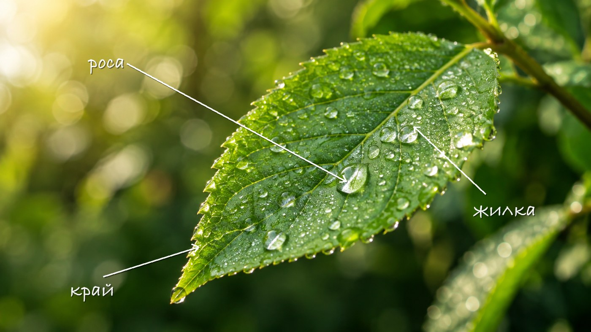
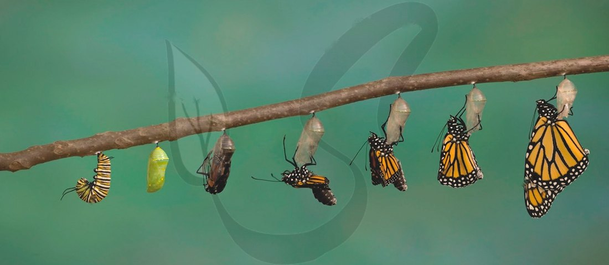
Erasely читает подписи и возвращает их в Figma настоящими текстовыми слоями — на тех же местах, в вашем шрифте. Выноски — векторными линиями одной толщины, с галочками. Двигайте, правьте слова, меняйте стиль.
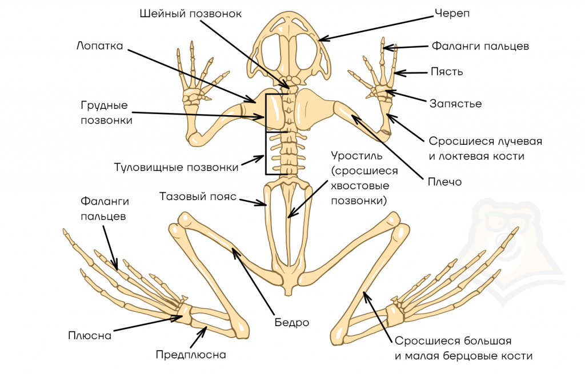
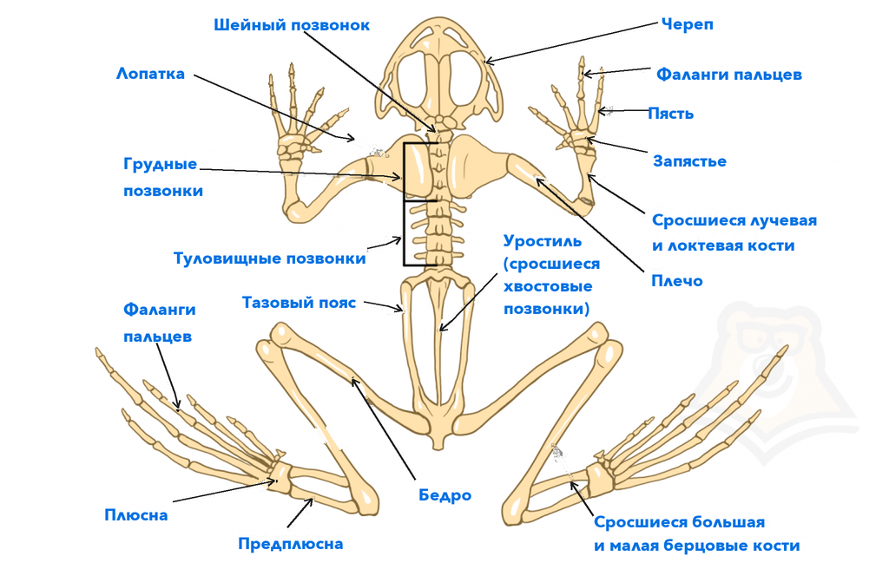
Выберите шрифт из всех, что есть в Figma, — кегль подберётся по ширине слов на картинке.
Режим «Номера»: 1, 2, 3… на месте подписей и ключ ответов рядом — готовое задание «подпиши части».
Новая версия ложится рядом, исходная картинка не меняется. Всё — одной группой.
Тетрадь собрали — дальше ученики, тесты и расписание. Это тоже можно не держать в голове.
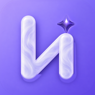
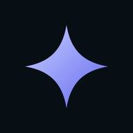
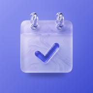
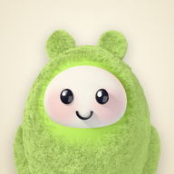
Да. Без подписки, лимитов и регистрации. Мы зарабатываем на других сервисах — Искре и Тестли.
Никуда. Нейросеть и всё остальное работают прямо в плагине на вашем компьютере, у плагина нет доступа в интернет.
Цветные схемы из учебников, чёрно-белая штриховая графика, фотографии с подписями. Лучше всего — рисунки с отдельными подписями и тонкими выносками.
Почти всё — с первого клика. Остатки (стрелки, уходящие в тёмный рисунок, хвостики линий) добираются ластиком за секунды, а лишнее возвращает кисть «Восстановить».
Да — включите «Подписи — слоями» и нажмите «Вставить в Figma». Подписи станут текстовыми слоями в выбранном шрифте, выноски — векторными линиями. Ошибку распознавания (редко, чаще в рукописном шрифте) поправите прямо в слое.
Нет — для фона у Figma есть своя кнопка Remove background. Erasely — про подписи и выноски.
Нет, плагины работают и на бесплатном тарифе Figma.
Erasely скоро появится в Figma Community. Пока — скачайте архив и установите за минуту: распакуйте его, затем в Figma → Plugins → Development → Import plugin from manifest → выберите manifest.json.
Нужна Figma для компьютера · ~15 МБ · Mac и Windows